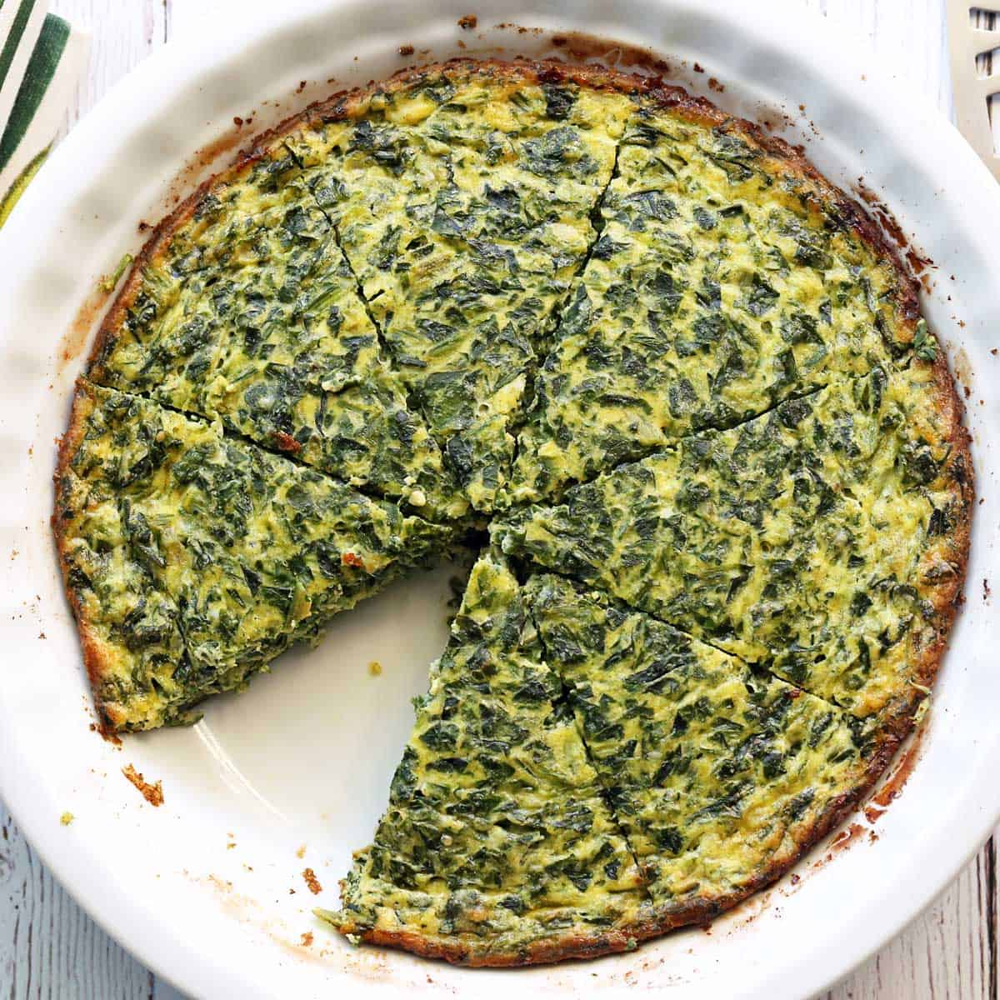

Spinach quiche

Description
This spinach quiche is a deliciously hearty “go-to” brunch dish. The combination of heavy cream and Gruyère makes it rich and flavorful. There's also a good bit of spinach, which balances out all that richness and makes it just a little bit healthier.
Ingredients
- ½ cup butter
- 1 small onion, chopped
- 3 cloves garlic, chopped
- 1 (10 ounce) package frozen chopped spinach, thawed and drained
- 1 (4.5 ounce) can mushrooms, drained
- 1 (6 ounce) package herb and garlic feta, crumbled
- 1 (8 ounce) package shredded Cheddar cheese, divided
- salt and pepper to taste
- 1 deep-dish pie shell
- 4 eggs
- 1 cup milk
Steps
- Preheat the oven to 375 degrees F (190 degrees C).
- Melt butter in a medium skillet over medium heat. Add onion and garlic and saute until lightly browned, about 7 minutes.
- Stir in spinach, mushrooms, feta, and 1/2 cup Cheddar. Season with salt and pepper. Spoon mixture into the pie shell.
- Whisk eggs and milk together in a medium bowl until combined. Season with salt and pepper. Pour over the spinach mixture in the pie shell, allowing egg mixture to thoroughly combine with spinach mixture.
- Bake in the preheated oven for 15 minutes. Sprinkle the top with remaining Cheddar and bake until set in center, 35 to 40 minutes longer. Allow to cool 10 minutes before slicing and serving.